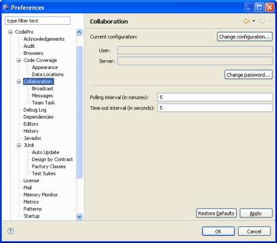
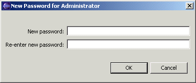

Preferences - Collaboration This page is used to control the primary collaboration options. Current ConfigurationThe fields in this section show the collaboration server with which the workbench is currently interacting, and the user identity assumed during these interactions. Change ConfigurationThis button opens a Configuration Wizard for specifying a new collaboration server and user; see the description below. Change PasswordThis button opens a dialog for specifying a new password for the user shown.  Polling IntervalThis determines how often the collaboration server is polled for changes of interest (new messages, for example). Time-out IntervalThis determines how long to wait for a response from the collaboration server before giving up and considering the server unreachable. |